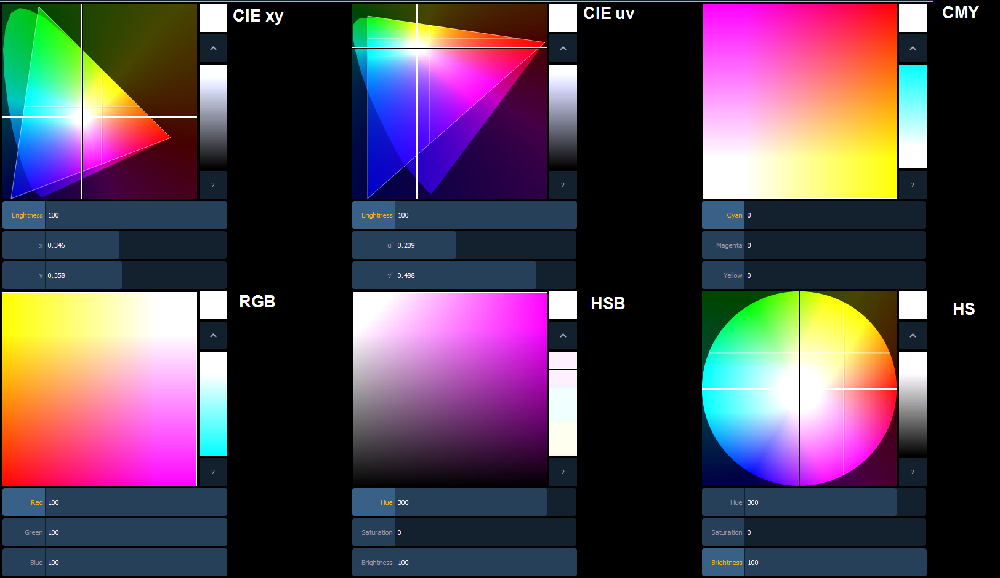
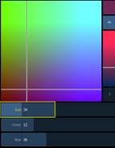
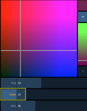

There are six color spaces that you can choose to work in. All of these spaces are connected. So it doesn't matter which space you wish to work in, the console will translate the information to work with your fixtures.
When the color picker is first opened, the CIE xy color space and the gel picker will open by default. You can select other color spaces and tools by clicking on the display configuration tool (the gear icon) in the upper left corner of the color picker display.
Note: Multiple color picker tabs with different color spaces can be opened at the same time. Multiple color spaces can be opened on the same tab.
The available color spaces are:

Note: When a fixture is in HS mode, the brightness control is not provided. Intensity controls the brightness.
For the CIE xy (CIE 1931) and CIE uv (CIE 1976), the triangle represents the RGB space as defined by the PLASA standard E1.54. Fixtures that comply to that standard can achieve any color within the triangle. The cone represents the color spectrum that we can see.
Each color space has three virtual encoders, a vertical encoder, a {?} button, and a {^} button.
The encoders will change based on the color space selected. Double tapping in a virtual encoder will cause it to jump to the location of your finger. Pressing and holding will cause the encoder to fade toward your finger.
Tapping anywhere in the color space will cause the crosshair to move to that location. Press and hold, then move your finger to fade the crosshair toward that location.
The {^} button will create the brightest version of the selected color. Press the {?} button to display labels on all of the controls.
For the RGB and CMY color spaces, you can change which color control is on the vertical encoder. Touch the label of the virtual encoder to change which color control is located on the vertical encoder. In the following graphics, Red is on the vertical encoder in the first one and green is on the vertical encoder in the second one. This is also indicated by the highlighted encoder name.


For the HS Wheel and HSB color spaces, the vertical encoder is always brightness.